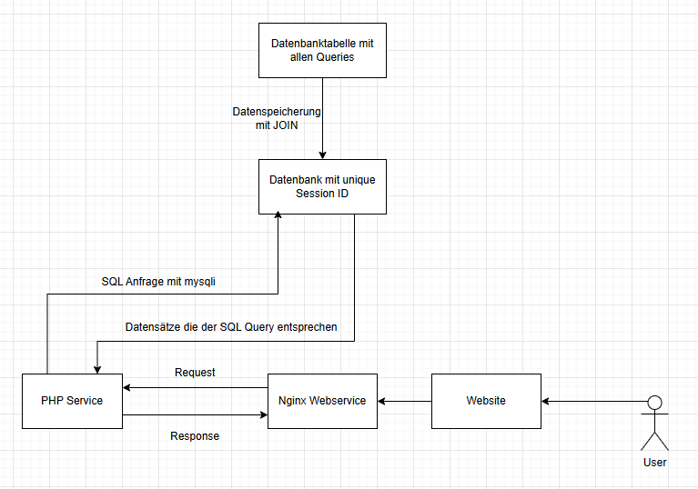
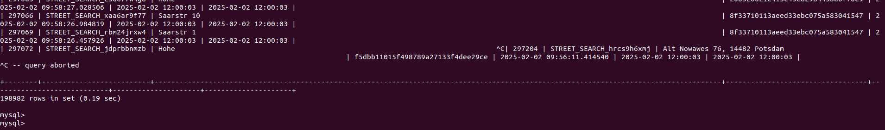

Dokumentation des User Query Dashboards
Grundlegende Überlegungen
1. Welchen Techstack möchte ich nutzen?
Ich habe mich hier für folgenden Stack entschieden
-
Docker für das Bereitstellen einer Weboberfläche
-
Docker ist skalierbar
-
Das Aufsetzen ist schnell und man stellt sicher, dass der Code auf jedem Gerät gehostet werden kann ohne große Abhängigkeiten
-
public images für die datenbank und den webserver können genutzt werden
-
public images für die mysql datenbank und den webserver können genutzt werden
-
Änderungen sind nach einem einfachen Reload sofort sichtbar durch volumes
-
natives PHP mit mysqli Erweiterung
-
Ich habe mich gegen ein Framework entschieden da die Aufgabe nur "simple" SQL Queries braucht. Und die Erweiterung Mysqli dafür komplett ausreicht
-
Nginx als Webserver
-
Nutze ich immer gerne für meine privaten Projekte. Das ist also rein persönliche Präferenz, Apache würde sich auch eher lohnen wenn das ganze Projekt später auf z.b. einem Raspberry Pi gestartet wird.
-
Tailwind CSS als Tool
-
Man hätte die Aufgabe auch mit CSS selbst lösen können, aber da die Zeit auf max 2 Arbeitstage begrenzt war und ich nicht viel Zeit in das Styling stecken wollte habe ich das so gelöst.
-
jQuery und natives Javascript
-
Um Pagination ohne Seitenreload zu ermöglichen bei Ansicht der Userdaten und zum Anzeigen der Detail Queries für eine bestimmte Session
2. Wie sieht die Grundlegende Funktionsweise aus für die Query Übersicht?

Vorgehensweise
1. Docker Container gestartet kommen
1.1 Images für nginx und mysql rausgesucht -> mysql 5.7 genommen weil ich in vergangenheit immer Probleme hatte mit den neuen Versionen und ich nicht etwas entwickel was später von Kunden genutzt wird.
1.2 Versucht den mysql dump zu importieren -> gab einen fehler weil die credentials nicht richtig waren...
Fehler: credentials für die datenbank waren beim ersten starten schon gesetzt und nachträgliche Änderungen der credentials wurden erst nach neustart der container übernommen
Lösung: datenbank container killen und neustarten
1.3 Überprüft ob Datensätze vorhanden sind nach import ✅

1.4 Erste SQL Queries bauen und schauen ob die Daten damit auch gezogen werden können
Fehler: mysqli war nicht installiert da ich das vergessen ahbe
Lösung: hinzufügen als extension im Dockerfile, nochmal docker build . ausführen
1.5: 2nd Try SQL Query ( SELECT COUNT(*) )
-> gesehen wie groß die tabelle ist und erstmal ein limit hinzugefügt bei ( SELECT * ) command um zu prüfen welche daten alle wie angeordnet sind (spaltennamen, formate, etc)
-> erste tabelle mit allen werten angezeigt
2. Aufgabenstellung nochmal gelesen um Anwedungsfall richtig zu verstehen
-> realisiert, dass ich gar nicht alle Anfragen in einer Tabelle haben möchte sondern nur alle Session IDs und die letzte Query
-> log tabelle viel zu groß um da nach unique session ids zu filtern
-> Lösung: zweite Tabelle erstellen die nur die session id, den letzten timestamp und die letzte anfrage beinhaltet
-> Es wird trotzdem möglich sein ohne Probleme alle user queries für eine session id zu bekommen da diese in beiden tables auftaucht.
2.1 zweite Tabelle erstellt und dort erste Queries ausgeführt
-> Probleme mit Join statement von log tabelle auf neue tabelle
-> nach debugging problem gefunden -> brauchte AS Statement um die Values richtig zu mounten
-> zweite tabelle steht und daten können angezeigt werden
-> tabelle so schon sehr unschön aus -> kurzer Fokus aufs Styling und von flowbite tabellenvorlage genommen
3. Ajax zum Anzeigen von einzelnen Sessions nutzen
-> jquery.min.js file eingebunden -> kann evt noch lokal hinzugefügt werden und nicht über cdn
-> jQuery genutzt um simple ajax anfrage laufen zu lassen und response auszuwerten
-> hat direkt geklappt, response kam zurück
3.1 single.php file erstellen um bestimmte datensätze/table rows zurückzugeben
-> 2 getrennte files bei denen ich beide die gleiche db verbindung brauche und ähnliche funktionen
-> db verbindung, default queries und execute_query methode in seperate datei ausgelagert und diese bei index und single inkludiert
-> db verbindung hat auch geklappt
3.2 richtige datensätze übergeben nach js um dort die daten zu verarbeiten und anzuzeigen
-> direkt html struktur mit den daten übergeben da bauen der table rows in js komplizierter gewesen wäre
3.3 testing für single session
-> daten in dem tabellen body werden ersetzt, um wieder alle daten zu sehen muss ein reload erfolgen
-> sehr anwenderunfreundlich
-> Idee: Popup
3.4 Popup erstellen und Daten zugänglich machen